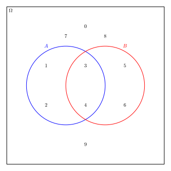

L’objet fondamental à la base des mathématiques discrètes (voire même des mathématiques en général) est une structure appelée ensemble. Un ensemble est une structure qui regroupe des objets. On peut parler de l’ensemble des étudiants du programme Sciences informatiques et mathématiques, de l’ensemble des arbres sur le terrain du cégep ou encore l’ensemble des nombres naturels compris entre \(4\) et \(42\text{.}\)
Le terme \(objet\) est pris dans son sens intuitif et large. Au début de la théorie des ensembles, plusieurs paradoxes furent relevés, le plus célèbre par Bertrand Russel. On peut pallier à ces paradoxes en donnant une définition axiomatique de la théorie des ensembles. Pour ce qui suit, ce n’est pas nécessaire. On utilisera plutôt l’approche naïve de la théorie des ensembles. Un ensemble sera donc bien défini si, étant donné tout objet, on peut déterminer sans aucun doute son appartenance ou non à l’ensemble.
Dans cette section, on définit la notion d’ensemble, la description en extension et en compréhension d’un ensemble, la relation d’appartenance d’un objet à un ensemble, la relation entre deux ensembles et la cardinalité d’un ensemble. On donne aussi des exemples importants d’ensembles, dont l’ensemble vide.
Sous-section1.1.1Définitions et exemples
On commence avec la définition d’un ensemble. Un ensemble sera bien défini si on peut toujours déterminer l’appartenance ou non appartenance d’un objet à cet ensemble sans aucun doute. Pour voir un exemple d’ensemble qui n’est pas bien défini, on pourra consulter l’exercice 1.1.5.8.
Définition1.1.1.Un ensemble.
Un ensemble est une collection non ordonnée d’objets. On appelle aussi les objets des éléments ou des membres. Typiquement, on dénote un ensemble par une lettre majuscule du début de l’alphabet.
Bien que les ensembles soient normalement utilisés pour regrouper des objets avec des propriétés similaires, rien n’oblige que ce soit le cas. On peut même avoir un ensemble dont les éléments sont eux-mêmes des ensembles.
On peut décrire un ensemble de plusieurs manières. La plus simple, mais pas toujours pratique ou même possible, est d’énumérer ses éléments. On dit alors que l’ensemble est décrit en extension. On utilisera les accolades \(\{, \}\)pour encadrer les éléments d’un ensemble. Ceci est cohérent avec la notion d’ensemble de plusieurs langages de programmation, dont Python/Sage, qui sera utilisé à plusieurs reprises dans ces notes.
Tel que mentionné dans la définition, un ensemble est une collection non ordonnée d’objets. Cela signifie que l’ordre n’est pas important dans la description de l’ensemble. Ainsi, l’ensemble \(A^{'}=\{4,5,3,7,9,8,6\}\) est en fait le même ensemble que l’ensemble \(A\) de l’exemple 1.1.2. De plus, comme c’est l’appartenance d’un objet à l’ensemble qui est important, la répétition n’est pas nécessaire. L’ensemble \(B^{'}=\{t,u,r,c,o,t,t,e\}\) est le même ensemble que l’ensemble \(B\) de l’exemple 1.1.2.
Dans la description en extension de l’ensemble des carrés parfaits inférieurs à \(100\text{,}\) on a utilisé les «…» afin de limiter l’écriture. On comprend que la suite définie par les premiers termes de la description continue de manière naturelle dans cette omission. Souvent, pour décrire un ensemble contenant beaucoup d’éléments, même une infinité, on utilisera la description en compréhension de l’ensemble. On énonce alors la (ou les) propriété que possèdent les éléments de l’ensemble à l’intérieur même de la description. Dans ce cas, on utilisera souvent pour dénoter un élément arbitraire de l’ensemble une lettre minuscule analogue à celle utilisée pour le nom de l’ensemble ou encore ayant un sens particulier dans le contexte.
Il peut y avoir plus d’une manière valide pour décrire chacun de ces ensembles. En voici une pour chacun:
\(\displaystyle A=\{v~|~ v \text{ est une voyelle de l'alphabet }\}\)
\(B=\{b~|~ b \text{ est un chiffre pair}\}\text{;}\)
\(C=\{c~|~ c \text{ est un caractère utilisé pour écrire le prénom de l'auteur}\}\text{.}\)
Dans la description en compréhension, on sépare la variable utilisée de la condition avec une barre verticale. Cette barre devrait se lire comme l’expression « tel que ». On voit souvent le «deux points (:) » comme autre possibilité de notation.
Sous-section1.1.2Relation entre deux ensembles
Étant donné un objet quelconque \(a\) et un ensemble \(A\text{,}\) on écrit \(a\in A\) (se lit \(a\) est dans \(A\) ou encore \(a\) appartient à \(A\)) si \(a\) est un élément de l’ensemble \(A\) et \(a\notin A\) (\(a\) n’appartient pas à \(A\)) sinon. Puisque plusieurs descriptions sont possibles pour un même ensemble, il peut être pratique de déterminer si deux ensembles sont égaux. On définit ci-dessous deux relations possibles entre deux ensembles, celle d’inclusion et celle d’égalité.
Définition1.1.5.Relation d’inclusion.
Soit \(A\) et \(B\) deux ensembles avec la propriété que, pour tout élément \(a\in A\text{,}\) on a aussi \(a\in B\text{.}\) On dit alors que \(A\) est un sous-ensemble de \(B\) et on écrit \(A\subseteq B\text{.}\) Si on est certain que les ensembles sont différents, on pourra utiliser le symbole d’inclusion stricte, \(\subset\text{.}\) Ces symboles font penser aux symboles pour les inégalités. Ainsi, bien que d’usage beaucoup moins répandu, on peut aussi écrire \(B\supseteq A\text{.}\)
Ces symboles existent aussi dans leur version «négative» (\(\not\subseteq,\not\subset,\not\supseteq,\not\supset\)), utilisés pour la non inclusion d’un ensemble dans un autre. De plus, une variante souvent utilisée pour mettre l’emphase sur un sous-ensemble stricte est le symbole \(\subsetneq\text{.}\)
On peut évidemment vérifier qu’un ensemble est un sous-ensemble d’un autre, mais on peut aussi créer les sous-ensembles à partir d’un ensemble.
L’ensemble \(A\) contient trois éléments. Un sous-ensemble pourrait donc potentiellement contenir un, deux ou même trois éléments. On énumère les possibilités ci-dessous.
\(A_1=\{a\},A_2=\{b\}\) et \(A_{3}=\{c\}\text{,}\) qui ne contiennent qu’un élément.
\(A_4=\{a,b\},A_{5}=\{a,c\}\) et \(A_6=\{b,c\}\) qui en contiennent deux.
\(A=\{a,b,c\}\) lui-même, qui contient trois éléments.
Plus tard, on verra comment compter tous les sous-ensembles possibles à partir d’un ensemble ayant \(n\) éléments. Avec une petite précision, on reparlera de l’ensemble de tous les sous-ensembles possibles à la définition 1.1.12.
Définition1.1.7.Relation d’égalité.
Soit \(A\) et \(B\) deux ensembles. On dit que les ensembles sont égaux, et on écrit \(A=B\ \text{,}\) si et seulement s’ils sont formés des mêmes éléments.
Une manière pratique de déterminer si deux ensembles sont égaux est de montrer qu’à la fois \(A\subseteq B\) et \(B\subseteq A\text{.}\)
On regarde des exemples de sous-ensembles et d’ensembles égaux.
\begin{align*}
A&=\{2,4,6\}\\
B&=\{n~|~ n \text{ est un nombre entier compris entre }0\text{ et }9\text{ inclusivement}\}\\
C&=\{4,6,2\}\\
D&=\{n~|~ n \text{ est un nombre entier et } -1\leq n\leq 9\}
\end{align*}
On peut remarquer les relations suivantes: \(C\subseteq A\text{,}\)\(A\subseteq C\text{,}\)\(A\subseteq B\text{,}\)\(B\subset D\text{,}\)\(A=C\text{.}\) On aurait pu noter sans problème que \(B\subsetneq D\) (équivalent à \(\subset\text{,}\) ou même \(B\subseteq D\) (moins strict, mais quand même vrai), mais pas que \(A\subset C\text{.}\)
Le nombre d’éléments dans un ensemble est appelé la cardinalité de l’ensemble. Pour un ensemble \(A\text{,}\) on la note \(\text{card}(A)=|A|\text{.}\) Les ensembles \(A,B,C\) de l’exemple 1.1.8 ont respectivement comme cardinalité \(|A|=3,|B|=10\) et \(|C|=3\text{.}\)
La cardinalité d’un ensemble peut être n’importe quel nombre naturel ou même infini. Un ensemble est dit fini si sa cardinalité est un nombre naturel et infini sinon.
Il peut être utile d’avoir une représentation graphique de la notion d’ensemble et des concepts associés. Pour cela on peut utiliser un diagramme de Venn. Dans un tel diagramme, on identifie l’ensemble des tous les objets étudiés par un rectangle. On le notera \(\Omega\) (la lettre grecque omega, majuscule). On l’appelle souvent le référentiel ou encore l’ensemble univers. Dans ce rectangle, un certain nombre d’ensembles peuvent être illustrés, souvent par des cercles.
À titre d’exemple, on prend comme ensemble univers les chiffres arabes \(\Omega=\{0,1,\ldots ,9\}\) et on considère les deux sous-ensembles suivants: \(A=\{1,2,3,4\},B=\{3,4,5,6\}\text{.}\) La figure suivante illustre un diagramme de Venn de ces ensembles.

Figure1.1.9.Un diagramme de Venn
On peut remarquer dans la figure 1.1.9 que les éléments \(3,4\) sont à la fois dans \(A\) et dans \(B\text{.}\) C’est un cas particulier de l’intersection de deux ensembles, qui sera défini dans la section 1.2.
Il est possible de modifier les éléments des ensembles et de visualiser dynamiquement comment le diagramme évolue.
Figure1.1.11.Diagramme de Venn interactif
Sous-section1.1.4Ensembles particuliers
On donne maintenant la définition de certains ensembles importants. L’un deux, l’ensemble univers a déjà été mentionné. Un autre ensemble d’une grande importance est l’ensemble vide. On le note par \(\emptyset\) ou encore \(\{\}\text{.}\) Sa cardinalité est de \(0\text{.}\)C’est le seul ensemble qui possède cette propriété. Il possède aussi la propriété d’être un sous-ensemble de tous les ensembles, incluant lui-même. .
Un autre sous-ensemble a été évoqué à l’exemple 1.1.6. On en donne une définition plus précise ci-bas.
Définition1.1.12.L’ensemble des puissances.
Étant donné un ensemble \(A\text{,}\) l’ensemble de tous les ensembles formés des éléments de \(A\text{,}\) c’est-à-dire tous les sous-ensembles de \(A\text{,}\) est appelé l’ensemble des puissances (ou des parties) de \(A\text{.}\) On le note par \(\mathscr{P}(A)\text{.}\)
Si on ajoute l’ensemble vide au sous-ensembles trouvés à l’exemple 1.1.6, on obtient l’ensemble des puissances de \(A\text{:}\)
On termine avec la liste des principaux ensembles de nombres qui seront utilisés dans ces notes.
L’ensemble des nombres naturels, noté \(\mathbb{N}=\{0,1,2,\ldots\}\text{.}\)
L’ensemble des entiers, noté \(\Z=\{\ldots, -2,-1,0,1,2,\ldots \}\text{.}\)
L’ensemble des nombres rationnels, noté
\begin{equation*}
\Q=\left\{\left.\frac{a}{b}~\right|~ a,b\in \Z\ \text{ et }\ b\neq 0\right\}\text{.}
\end{equation*}
L’ensemble des nombres réels, noté \(\R\text{.}\) Pour cet ensemble, on se fie à l’intuition de ce que sont les nombres réels, par exemple les nombres situé sur une droite infinie, car donner une définition précise est difficile. Cet ensemble sera peu utilisé, sa nature étant davantage du côté continu que discret.
Dans la description d’un ensemble en compréhension, lorsque les éléments sont des nombres, il est de bon usage de spécifier dans quel ensemble ces nombres se trouvent. Il n’y a pas de manière unique de le faire, en voici deux:
\(A=\{k\in \Z ~|~ k^2\leq 16\}\text{;}\)
\(A=\{k~|~ k\in \Z\ \text{ et }\ k^2\leq 16\}\text{.}\)
On pourrait traduire ces deux écritures respectivement par
L’ensemble \(A\) est composé des entiers \(k\) tels que leur carré est inférieur ou égal à \(16\text{;}\)
L’ensemble \(A\) est composé d’éléments \(k\) tels que \(k\) est un entier dont le carré est inférieur ou égal à \(16\text{.}\)
La précision de l’ensemble permet de déterminer avec certitude les éléments de l’ensemble. Par exemple, l’ensemble \(A\) ci-dessus est \(A=\{-4,-3,-2,-1,0,1,2,3,4\}\text{,}\) mais l’ensemble \(B=\{k\in \N~|~ k^2\leq 16\}\) ne contient que les éléments \(\{0,1,2,3,4\}\text{.}\)
Remarque1.1.13.Les intervalles.
On délimite les ensembles par les paires d’accolades, soit en énumérant les éléments ou en donnant une description des membres. Pour les ensembles dont la cardinalité est infinie, il peut être difficile ou impossible d’énumérer les éléments. En particulier, certains sous-ensembles des nombres réels sont assez importants pour qu’on leur donne une notation propre à eux. Ce sont les intervalles. Voici quatre exemples de cette notation:
On a \(B=\{\frac{a}{b}~|~ a,b,\in\{ -5,2,10\} \}= \{1,\frac{-5}{2},\frac{-1}{2},\frac{-2}{5},\frac{1}{5},-2,5\}\text{.}\) Ainsi, \(-2\in B \) et \(5\in B\text{.}\)
(c)
\(\{n\in \N~|~ n \text{ est un facteur de } 60\}\text{;}\)
On a \(C=\{n\in \N~|~ n\text{ est un facteur de } 60\}=\{1,2,3,4,5,6,10,12,15,20,30,60\}\text{.}\) Ainsi, \(-2\notin C\text{,}\) mais \(5\in C\text{.}\)
Oui, car pour tout \(x\in \{5,13,1,8\}\text{,}\) on a aussi que \(x\in \{1,2,3,5,8,13,21\}\text{.}\)
4.
Donner le diagramme de Venn correspondant aux ensembles suivants : \(\Omega=\{1,2,3,4,5,6\},A=\{1,3,5\},B=\{3,4,5,6\}\text{.}\)
5.
Soit \(A,B\subseteq\Omega\) deux ensembles quelconques non vides. Dessiner toutes les configurations relatives possibles que peuvent avoir \(A\) et \(B\) dans un diagramme de Venn (en supposant que si un sous-ensemble est vide, il est absent).
6.
Donner \(\mathscr{P}(A)\) si \(A=\{a,3,\Delta\}\text{.}\)
On définit \(X\) comme l’ensemble de tous les ensembles qui ne se contiennent pas eu même. Ainsi, pour un ensemble \(A\text{,}\) on a \(A \in X\) si et seulement si \(A\notin A\text{.}\) Déterminer si \(X\) est un ensemble bien défini.